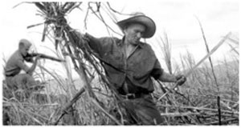

La Troncal
Hace más de 69 años, durante la década de 1950, un grupo de familias humildes, compuestas por hombres y mujeres agricultores, comenzó a emigrar de diversas partes del país. Estas familias se asentaron en las tierras ubicadas a lo largo de las vías, en la intersección de Duran-Tambo y Puerto Inca-Machala. La convergencia de estas dos rutas forma una "Y", convirtiendo esta área en un importante punto de conexión para el transporte terrestre y el comercio entre las ciudades costeras y las de la sierra, como Cuenca, Azogues, Guayaquil y Machala. Desde entonces, el crecimiento poblacional y el rápido proceso de urbanización han sido evidentes, dando lugar a lo que hoy conocemos como La Troncal.
Imagen Referencia
Esta imagen es refrente a las labores de campo.
Datos históricos relevantes
| Año | Evento | Descripción |
|---|---|---|
| 1950 | Fundación | Primer asentamiento de familias agricultoras. |
| 1975 | Creación de Infraestructura | Construcción de carreteras y servicios básicos. |
| 2000 | Urbanización | Expansión y modernización de áreas urbanas. |